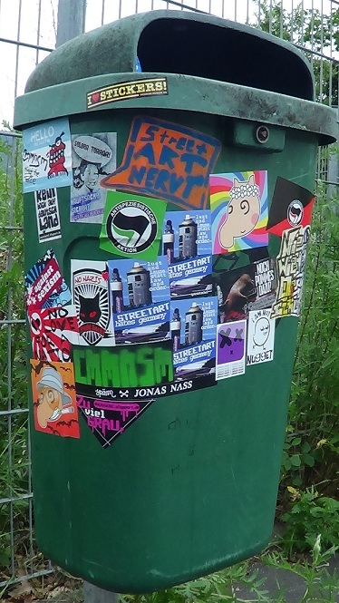

„Immer weitergeh´n,
wenn es auch schwer fällt“
Straßenjungs, Punk
Manchmal machst du etwas und dann stellst du fest, das hat das gewünschte Ziel nicht erreicht. So ist es uns auch passiert. Die Seite disk.blogsport.de ist nicht in kommunal aufgegangen, sondern hat überlebt. Und so lassen wir sie nun am Leben, trennen, was besser auch zu trennen ist (das kommunale Geschehen und die Debatte um gesellschaftliche Zustände) und halten die Seite am Leben für weitere Diskussionen, Debatten, Diskurse, für die es scheinbar künftig in Miltenberg und darum herum auch wieder Interesse gibt. Wir werden diese Ansätze gerne begleiten und publizistisch unterstützen. Ein Button zu disk.blogsport.de findet sich nun wieder in der rechten Spalte, die kurzzeitige kommunal-Rubrik „beiträge zur diskussion“ entfällt damit. Alle Debattenbeiträge sind nun auf disk.blogsport.de zu finden.
Weiterhin haben wir angesichts des Bestehens einer neuen Info-Seite in Aschaffenburg nun endgültig beschlossen, uns auf den Kreis Miltenberg zu beschränken, beachten aber auch, was darum herum für unsere Region direkt wirksam ist. Kleinere Bereinigungen auf kommunal werden wir bei Gelegenheit vornehmen.
Mit einem Gruß nach Aschaffenburg und in den Rest der Welt
die Kommunalistas
Nun haben wir aburg.org in die rechte Spalte aufgenommen. Dort finden die geneigten Leserinnen und aufmerksamen Leser also immer die Verbindung zu den neuesten Wichtigkeiten aus Aschaffenburg. So können sich die kommunalistas etwas mehr auf den Kreis Miltenberg – und auf andere Projekte konzentrieren. Neonazi-Aktivitäten sowie artverwandte Schweinereien können nun bei aburg.org gemeldet werden. Da unsere diesbezügliche Rubrik bereits am 21.04.2012 eingestellt wurde, ist dies sicherlich der sinnvolle Ersatz – und noch weit mehr, da wir an bestimmte Infos garnicht herangekommen sind.

zugesandte Termininformation
Am Donnerstag, den 26. Juli ab 19 Uhr heisst es wieder: Bühne frei. Ob Musiker, Comedian, Akrobaten, Solokünstler, Dichter oder Kleinkünstler, Selbstdarsteller – alle sind herzlich willkommen. Das Motto: „Frei, live und direkt!“ Organisiert und moderiert von Peter Kraft. „Die Londoner haben doch auch ihren Speaker’s Corner!“
Interessierte Künstler melden sich bitte bei L/U/C/K/Y A‘R'T: 0152/05757159.
Wie wir erst heute mitbekommen haben (danke an Pogue Mahone für die Info!) gibt es seit einer Woche ein neues Infoportal für Aschaffenburg.
Es ist absolut sinnvoll, dass im Herzen des bayerischen Untermaingebietes, und das ist nun eunmal die Stadt Aschaffenburg, die Nachrichten für diese Region zusammengetragen werden.
Was das für uns heißt, das werden wir alsbald diskutieren. Wohl schon am Samstag, wenn sich einige nette Leute und die Redaktionsmitglieder von kommunal eh schon zu einer Besprechung über weitere Aktivitäten treffen.
Den Aschaffenburgern auf diesem Weg viel Glück und die Freiheit der eigenen Meinung(säußerung)
wünschen
die Kommunalistas
Manche Eimer haben es in sich. Der hier hat es auf sich. Dem haben viele Menschen eine geklebt.

… dass es momentan wenig Infos hier geben wird, wenn wir keine Zusendungen bekommen. Also: Schickt uns Eure Termine, Medien-Infos, Hintergrundberichte … Es müsste doch im Hochschulstadt-Einkaufsparadies Aschaffenburg mehr los sein!
Leserbrief zum Artikel „Fünf türkische Vereine verlassen »Brüderschaft«“ und Kommentar „Das Feld zu räumen, ist falsch“, MAIN-ECHO, 07.06.2012; mehrere Gruppen hatten ihre Beteiligung am Aschaffenburger Fest „Brüderschaft der Völker“ zurückgezogen, nachdem die Organisation DITIB dort mitwirken durfte.
Das Bestreben der Stadt Aschaffenburg, einen weiteren islamischen Verein zu integrieren, ist vor dem erstarkenden Anti-Islamismus sehr zu begrüßen. Wir haben aber den Eindruck, dass die Intention besagter fünf Vereine leider nicht ganz ernst genommen wird. So müsste sich unseres Erachtens niemand vom Zeitpunkt „vor den Kopf gestoßen“ fühlen, wer den Prozess kennt und den Entschluss heranreifen sah. Wir im Bündnis gegen Rechts kannten ihn spätestens seit vier Wochen, als wir nämlich mit VertreterInnen der besagten Vereine selbst gesprochen haben. (mehr…)
zugesandter Terminhinweis
Die derzeitige Rettungsschirm-Politik in Europa ist untrennbar mit Lohnabbau, Sozialabbau, Deregulierung und Privatisierung verbunden.
Attac, die KAB Betriebsseelsorge und die Gewerkschaft Erziehung und Wissenschaft zeigen am Mittwoch den 13.06.2012, 19:30 Uhr im Aschaffenburger Martinushaus, Treibgasse 26, die Low-Budget-Produktion „Catastroika“ des als „Griechenlands Michael Moore“ bezeichneten Aris Chatzistefanou. Charakter und Auswirkungen der von der „Troika“ geforderten „Strukturanpassungen“ werden ausführlich dokumentiert.
Anschließend werden noch Raum und Zeit zur Diskussion angeboten, inwieweit solche Krisenreaktionen auch zu uns reichen..
Weitere Informationen: www.gew-aschaffenburg.de und
www.attac-aschaffenburg.de.
Norbert Geis will noch einmal für den Bundestag kandidieren. Er wird bei der nächsten Wahl 74 Jahre alt sein!
Kein Kommentar.
zugesandter Terminhinweis
Deutsche Waffenlieferungen in alle Welt!
Panzer nach Saudi-Arabien – U-Boote an Israel
Waffen schaffen niemals Frieden!
Es kann nicht sein, dass sich der deutsche Staat sowie die Rüstungsindustrie
an Kriegsverbrechen der ganzen Welt bereichert.
Demo Sa 16.06.2012
Start 11.30 Uhr vor dem Schloss A’burg (mehr…)
Nachdruck eines Leserbriefes von Christian Schauer, DAGA Alzenau (26.05.12 Main-Echo, 06.06.12 Bote vom Untermain)
Amnesty kritisierte unter anderem, dass mehrere Bundesländer Roma in das Kosovo abschieben, obwohl ihnen dort Verfolgung und Diskriminierung drohen. (mehr…)
Wir wollten einen zwei Jahre alten Beitrag zum Thema Fußball und Nationalismus bei kommunal bringen, da hatte ihn der Autor schon auf der eigenen Seite (wieder-)veröffentlicht. Dazu auch noch mehrere Links zu anderen, wichtigen Beiträgen zum gleichen Thema. So bleibt uns nur, den Beitrag Und wieder einmal: Die Tage des Tretens zu verlinken und damit auch bei kommunal zur Diskussion zu stellen.